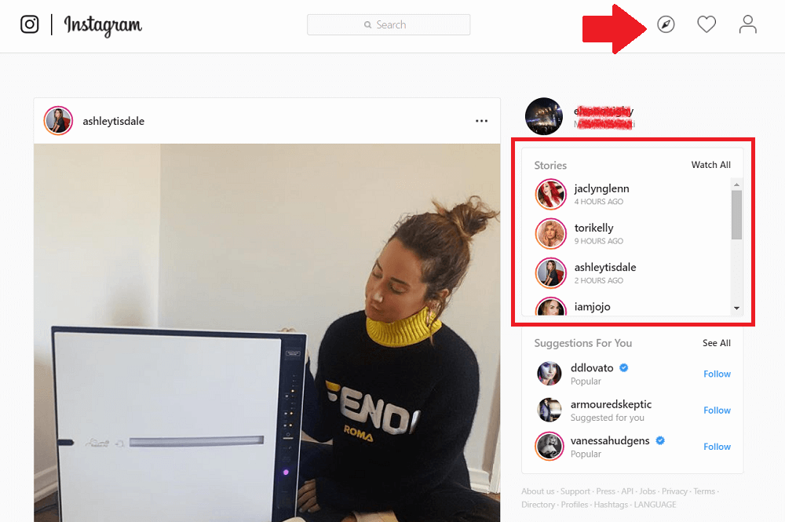
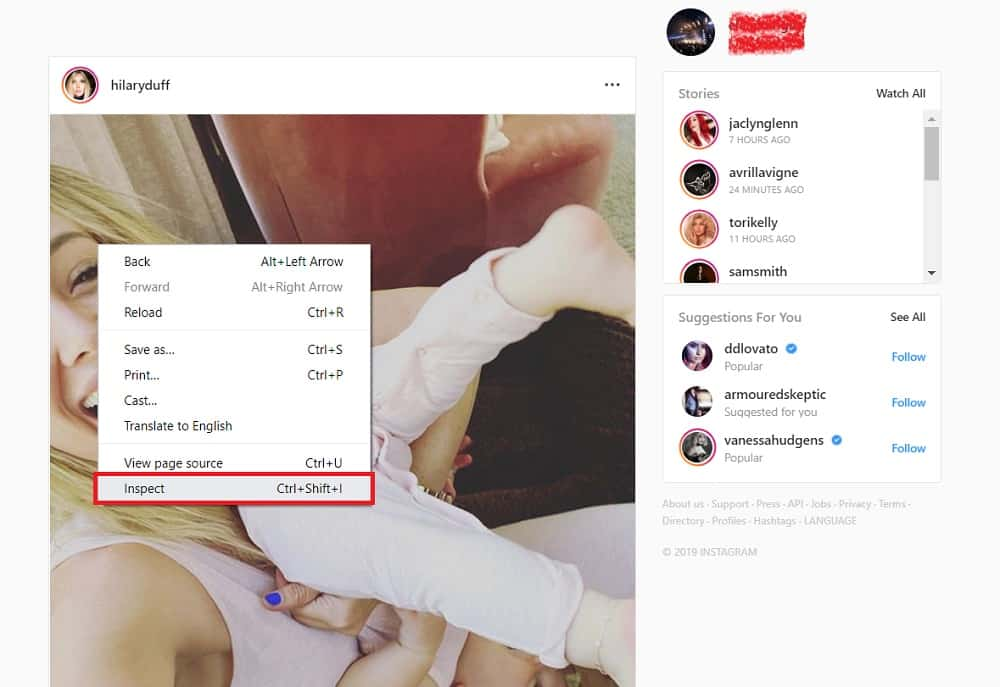
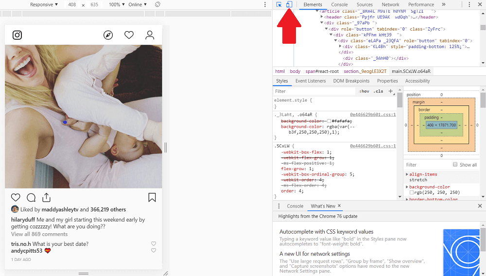
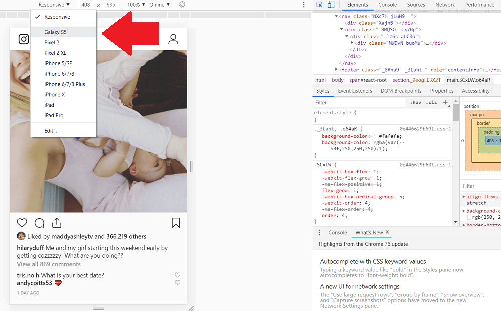
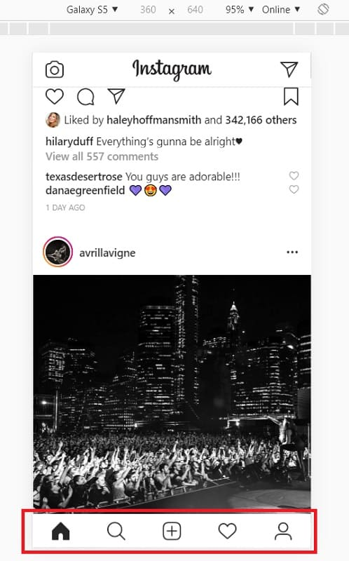

Since the advent of its platform, Instagram has primarily been a mobile app. Its camera functions and user-friendliness make for better use on a smartphone; but for those of us who prefer a screen and keyboard, can Instagram be used for PC?
Short answer: Yes. Though doing so does come with a few tricks, and third-party apps if necessary. Some of these tools may come free of charge; while others may cost a tiny price.
Let’s dive into some of the best, tried-and-tested methods of using Instagram straight from your desktop.
Using The Instagram Website From Your Computer
The easiest way of accessing Instagram for PC users is to visit Instagram’s website.
Simply type “Instagram.com” into your browser and enter your login details. If don’t already have an account, you can also easily sign up for one.
Courtesy of Instagram.
The interface of the Instagram’s desktop site is largely similar to that of the mobile app. The first page you see is your home feed, complete with your real-time lineup of recent Story updates from those you follow.

Unlike the mobile app, your navigation panel is located at the upper end of your screen. The same page icons are available – your notifications, the Explore page, and your profile (though the Explore icon has changed to the image of compass, rather than a magnifying glass). At the center of your panel is a search field for looking up other users or hashtags.
You can browse through your home feed and Explore page as normal, albeit with a less stylish display. You can also like, comment, and share others’ posts.
However, Instagram’s desktop features end here. The option of uploading photos or Story content straight from your PC is, sadly, non-existent.
But here’s where browser tricks and third-party platforms come into play.
Why Use Instagram From Your Desktop?
You may be wondering: what’s the point of using Instagram from your computer, anyway?
While not necessarily an appealing option for everyone, those who take their ‘gramming seriously may find that a desktop version boosts efficiency and convenience when managing their profiles.
Not only is it easier to type up long captions, messages, or comments on a keyboard; there’s also the benefit of taking pictures from a higher-quality camera, transferring these onto your desktop, and uploading them straight onto the platform.
Additionally, you can edit your photos through more professional desktop programs, and share the final products directly onto your profile.
Instagram for PC – Using Third-Party Schedulers
Before exploring more advanced tools that emulate Instagram’s mobile interface directly on your PC, let’s first take a look at scheduling apps.
These platforms let you prepare your Instagram content days, weeks, and even months in advance – image edits, captions, and all. They then allow you to schedule them as necessary, and publish the content on your behalf according to your set times.
While you aren’t technically using the Instagram platform straight from your desktop, they’re handy loopholes for publishing high-quality videos and photos right from your computer.
Later
Later is a well-proven beast of a marketing platform, used and beloved by Instagrammers everywhere.
Arguably the service’s most notable feature, its visual calendar enables users to plan out and preview their Instagram feed. Using their drag-and-drop functions, individuals can easily place content into their desired time slots, instantly scheduling them for future posting.

Courtesy of Later.
Not only does this feature provide daily, weekly, and monthly calendar previews, you also have the option of viewing how your grid will ultimately look in-app.
Users additionally have a media library for organizing all their potential content, with labelling options for ease of search. For further efficiency, they can also choose to bulk schedule posts into pre-set weekly time slots.

Courtesy of Later.
Later offers some of the best (and well-trusted) third-party tools for managing one’s Instagram content. Their auto-publishing rids of that extra effort in remembering to manually post at optimum engagement times – though a business profile is required to access this feature.
Hootsuite
Like Later, Hootsuite also prides in being one of the leading third-party schedulers for Instagram.
Its interface, however, takes on a different look. Hootsuite offers its users with a dashboard as their main page displaying all their connected social media profiles and scheduled streams of content. (Other than Instagram, Hootsuite also lets you hook up your Twitter, Facebook, Youtube, LinkedIn, and Pinterest accounts).

Courtesy of Hootsuite.
However, scheduled and published content can still viewed through a “calendar” display through Hootsuite’s “Planner” tool. The interface is similar to that of Later’s, displaying your weekly scheduled content and their designated time slots.

Courtesy of Hootsuite.
When adding new content to this calendar, users get to preview the final look of their Instagram post, captions and all. Unfortunately, a full preview of your overall grid is not available with this platform.

Courtesy of Hootsuite.
On top of scheduling options, Hootsuite users can also track their Instagram performance through built-in analytical tools and visual reports.
ViralTag
Last but not least, we’ve got ViralTag.
Viraltag offers yet another visual marketing calendar, allowing users to schedule content for a variety of social media platforms. Just like Later, ViralTag provides a full preview of your Instagram grid, ensuring your posts tie together cohesively.
Courtesy of Viraltag.
The service’s stand-out feature is its integration with the photo-editing tool, Canva. ViralTag already offers users with built-in editing options, though those looking for extra pizzazz on their photos can take advantage of Canva’s generous tools and customization features. As a result, you’re able to create high-quality, professionally-edited photos – ready for scheduling.
Courtesy of Vivaldi.
The platform also provides a hashtag tracker, helping you scout for any Instagram content related to your brand. This is particularly useful in curating any potential user-generated content (UGC).
Courtesy of Viraltag.
Sadly, its biggest pitfall is the lack of an auto-publishing feature. Users instead receive a push notification from ViralTag; this then prompts them to swipe through to manually post their content on Instagram.
Instagram for PC – Using the App Straight From Your Desktop
Instagram schedulers may be all good and well, but perhaps you’re looking to use the entire Instagram app straight from your PC.
Not to worry – these unique apps should get the job done easily.
Use Instagram From Your Computer – Bluestacks App Player
For those who wish to use the exact same Instagram interface on PC, look no further than Bluestacks.
This is a popularly-used tool for emulating Android applications on desktop. To get started, you’ll first need to download the Bluestacks software (for free!).
Courtesy of Bluestacks App Player.
Once you launch the app, search for “Instagram” in the main search field. This will pull up the Instagram app for you to install.

Courtesy of Z3RD (Youtube channel).
Upon installing Instagram on Bluestacks, you’re now ready to use it on your desktop. Double-click on its icon in your section of installed apps.
Bluestacks will then display Instagram as it appears on a smartphone screen. You can then interact with it as you wish; all functions available on the mobile app should work the exact same way on screen.
Courtesy of Z3RD (Youtube channel).
To upload photos, you must first have your content saved in to Bluestacks’ media manager.
Courtesy of Z3RD (Youtube channel).
This media will then appear in your “camera roll” when uploading a new photo from your desktop.

Courtesy of Z3RD (Youtube channel).
Add your filters, captions, and hashtags as normal – and post your final product directly to your Instagram feed!

Courtesy of Z3RD (Youtube channel).
Use Instagram From Your Computer – Vivaldi
Another tool that emulates the Instagram app for PC is Vivaldi.
Rather than some fancy software or desktop application, Vivaldi is simply a freeware, cross-platform web browser. It offers users with plenty of customization features, including color schemes and tab positioning. You can group your favorite tabs into saved window sessions, and write in-browser notes for future use or reference.
Courtesy of Vivaldi.
However, its leading feature is the option to create “web panels”; giving users the ability to have multiple websites open side-by-side within the same browser window. (Multi-taskers, rejoice!) This is where using your Instagram on desktop comes in.
Courtesy of Vivaldi.
To manage your Instagram profile on your PC, simply open up Instagram as a web panel. Its mobile version will instantly display as the default view, allowing you to interact with its interface as you would on a smartphone. This includes posting and editing your content right from your desktop! It’s that easy – though sadly, direct messaging features are unavailable.
Courtesy of Vivaldi.
Use Instagram From Your Computer – Flume Pro
Mac users can marvel at both the beautiful interface and practical functions of Flume – one of Apple’s leading platforms for using Instagram on your desktop.
Flume enables Instagrammers to perform most every function available on their smartphone, including uploading and editing new content for those who purchase its Pro version.
Courtesy of Flume.
The main display is designed similarly to that of a phone screen: slim and vertical. Both photos and videos can be uploaded directly from your Mac; and the app offers a unique editing studio that houses all of Instagram’s built-in filters and photo adjustments.
Courtesy of Flume.
This same suite allows you to write in your caption, along with hashtags, geotags, and user tags. (The counters below are a nice touch, indicating whether you’ve reached your tag or character limit.)
Courtesy of Flume.
When you’re done, click the “Post” button below – and it’s sent straight to your Instagram feed!
Flume additionally provides a slick view of your Instagram home feed, explore page, and the option to access your direct messages. All interaction functions (comments, likes, shares) are available and straightforward to use.
Courtesy of Flume.
Despite the absence of an Instagram Live or Stories function, Flume offers enough features (some of which go beyond the mobile version) to make it well worth its $10, one-time fee.
Use Instagram From Your Computer – Deskgram Pro
Finally, we’ve got Deskgram Pro.
As its name labels it, Deskgram recreates a “desktop version” of Instagram for both Mac and PC users. The platform may lack a few functions provided by the mobile app, though it does the basic job well.
Photos can be uploaded straight from your computer files, with the same filter options as found on the mobile versions. Users are able to craft and publish complete posts – captions, hashtags, mention tags, and all.
Courtesy of Deskgram.
You can also choose to upload videos, with the options to trim and crop your file as necessary.
Courtesy of Deskgram.
The interface is largely similar to that of Instagram mobile. The same search functions are provided, allowing you to look up your favorite accounts and hashtags.
Courtesy of Deskgram.
A free version of this tool is available for all users, though offers exclusively interactive functions such as liking, commenting, seaching, and browsing through people’s feeds. To upload content right from your PC, a “Pro” subscription is required for $2.99 a month.
This version allows unlimited video and image uploads, along with basic social functions.
Sadly, Deskgram lacks the ability to view stories, send direct messages, and log in via Facebook.
Use Instagram From Your Computer With This Browser Trick
If all else fails, you can always opt for this method of using Instagram on your desktop – no apps or extra software required.
For Google Chrome Users
If you’re using the Google Chrome browser on either a Mac or PC, your instructions are as follows:
Step1: Open Instagram.com in a new tab and enter your login credentials.
Step 2: Right-click on your screen, and select “Inspect”.

Step 3: A side panel will appear displaying the page elements. At the top left-hand corner of this window is an icon allowing to toggle between desktop and mobile view.

Step 4: In your main browser window, select “Responsive” to open a drop-down menu. This will display all the available device previews; select one according to your preference.

Step 5: At this stage, you may be missing the navigation panel available on mobile devices. Simply refresh your tab, and this should prompt the section to appear.

And you’re done! Your navigation options work just as they do on mobile – including the ability to upload photos straight from your computer files.
For Safari Users
Mac users on Safari’s browser have slightly different steps to achieve this, though doing so is just as simple.
Step 1: Select the Safari menu at the top left-hand corner of the browser. Click on “Preferences”.
Courtesy of hbase.net.
Step 2: From the pop-up menu, select the “Advanced” tab. In this tab, check out the “Show Develop menu in menu bar” option.
Courtesy of hbase.net.
Step 3: Open up Instagram.com in your browser and enter in your login credentials. Once that’s done, select the “Develop” menu above your browser.
Courtesy of hbase.net.
Step 4
Click on the “User Agent” option and select the Apple device that best suits your preferences.
Courtesy of hbase.net.
This should emulate the Instagram mobile interface on your screen, complete with the camera option to upload media from your Mac.The process should play out exactly as it does on mobile – with cropping, filtering, and captioning options.
Using Instagram From Your Desktop Makes for Easy, Convenient Profile Management
Using Instagram from your computer has a number of convenience benefits, allowing users to upload more professionally edited, high quality content. Doing so doesn’t have to be a hassle; with the tools in this guide, you’ve got all you need to manage Instagram on your desktop like a pro.